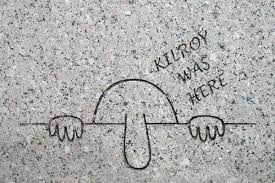
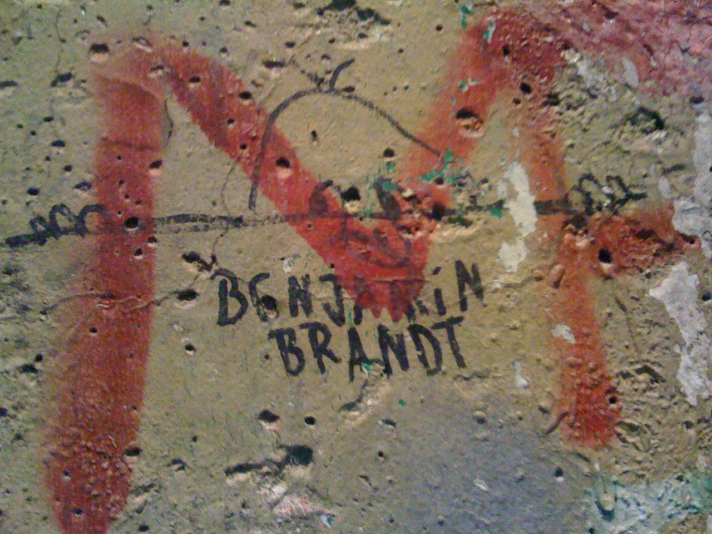
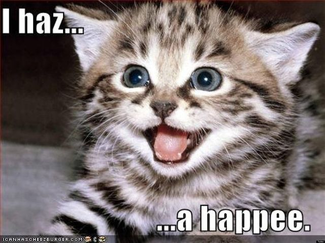

Welcome to the Meme Gallery! The Meme according to the dictionary is "an image, video, piece of text, etc.,
typically humorous in nature, that is copied and spread rapidly by internet users, often with slight variations."
The word meme is derived from the Greek word 'mimēta' meaning 'to imitate', which when put together with its original
definition, gives you a result similar to what the word is used for in a modern-day context where an image is shared
through the internet and is edited slightly every time to create a new form of art and culture in itself.
This is the art of the 21st century!
Pre-digital meme period
Memes can be found dated all the way back to the Second World War, with the use of the "KilRoy was here" graffiti
drawn by General Infantry of the US Army in the 1940s. This was before the digital period where although different
to today's understanding of a meme, it still followed the process of an image being widely replicated as some
form of culture.


Although this is one of the earliest 'memes' that was discovered, the exact decade of origin is still quite unclear.
The early 2000s
The Early 2000s had something that they didn't during WW2 and this was the internet. Everything was somewhat
connected and digital media was at a stage where people would be able to share content that people online would
all be able to recognise.
During this period, memes were at a point where its own culture existed but its definition was still quite vague.
The most popular memes or videos from this time period would be the "Peanut Butter Jelly Time", a short video
which included a GIF of a banana dancing over a very catchy song uploaded in 2002, and the "Numa Numa Dance"
where a man sitting in his room dances to "Dragostea Din Tei" in 2004, which went viral around the same time
the forum of 4Chan was launched.
The Late 2000s
This period between mid-2000s and early 2010 was when new meme formats were tried and a large range of different
memes were born. This period also shaped the backbone to the meme the way we know it today such as the
Top and Bottom Text format, rage comics and other very easily recognisable memes.
Due to the launch of both YouTube and Reddit at this time, there was a huge influx of memes due to them being
'hubs' on the internet for memes. In 2006, the LolCat meme was created, where picture of an adorable cat was taken
and the Top/Bottom text format was applied to it. Generally, the text would be edited to reflect very badly spelt
words to portray the cat like a baby such as spelling 'has' as 'haz', etc.

Another very notable meme was from Dragon Ball Z, which was a very popular anime at the time. The original scene involved
Vegeta being asked what's Goku's power level was, to which he respond with "IT'S OVER 9000!"
The Golden Era
The Golden Era of the meme first began in 2007, when this video was uploaded on YouTube.
If you've clicked on the link then you'd understand what I am talking about. This is the Rick-Roll meme which is still
a thing today. Rick-Rolling is a term that is used when somebody gets shown a video of the song "Never Gonna Give You Up"
by Rick Astley when they least expected it. An example could be this video below:
"Charlie bit my finger" was another classic meme from the early Golden Age, where a video of a tolddler playfully biting
his older brother's finger went viral. The older brother then, in pain, says "OUUUUCH CHARLIE, THAT REALLY HURT!".
Further to this, there were the Nyan-Cat video, where an 8-bit tart-cat leaving a rainbow trail behind while singing "nyan nyan
nyan..." on repeat went viral. It was a very annoying video.
The final video from the golden era of memes would be Rebecca Black's song "Friday". The song was hated for some apparent
reason. It was an infectiously catchy song but the autotune was far too much which might have been why or perhaps the
lyrical intellectuality of "Yesterday was Thursday, Today is Friday"?
The Transition to videos
From 2012 onwards with the release of vine, although images of memes were still widespread, there was a great leap towards
the use of videos which then become viral and as a result, they get replicated and form 'trends'. This is still within
the realm of a meme where we said media was replicated and shared as some sort of culture.
This was the start of the culture where people would stare at videos and memes for hours on end, hence to the large
success of Vine. Famous clips that you'd recognise include the "The power of God and Anime", "Avocado boy" and "Deez Nuts".
As far as memes go, that's about it for the best days. This page will be updated for more updated memes as time goes on.